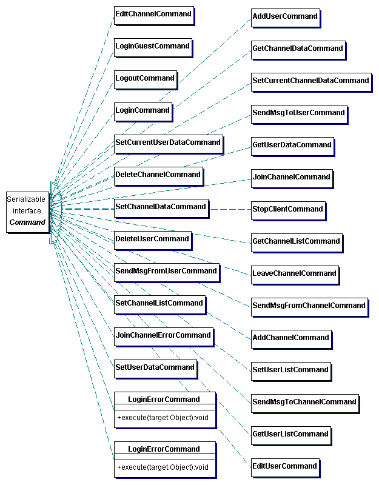
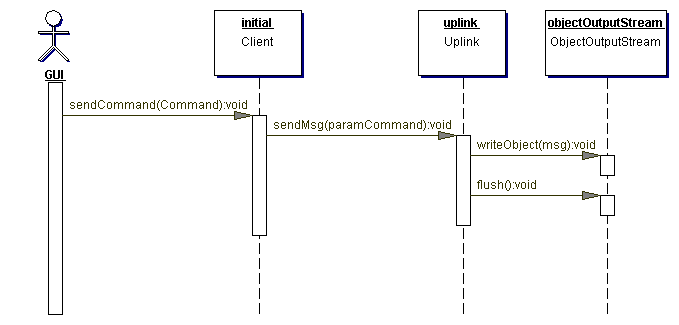
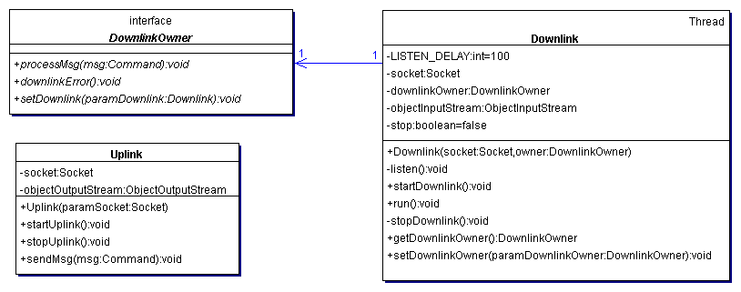

| Version | Datum | Autor |
| 1.0 | 31.5.2001 | Malte Knörr |
Norbert Schenk
Institut für Computergrafik
Rebenring 18
38106 Braunschweig
Tel.: (0531) 391-21 04, -21 03
E-Mail: n.schenk@tu-bs.de
Marco Zens
Institut für Computergrafik
Rebenring 18
38106 Braunschweig
Tel.: (0531) 391-2106, -2103
E-Mail: m.zens@tu-bs.de
Die SEP-Gruppe "Worst Cases", SS 2001:
Andreas Büthe
Tel.: (0171) 7 96 38 17
Mobil: (0531) 2 70 45 15
E-Mail: a.buethe@gmx.de
Jan-Henrik Grobe
Mobil: (0172) 5 44 70 84
E-Mail: j.grobe@gmx.de
Frithjof Hummes
Tel.: (0531) 2 60 10 08
Mobil: (0177) 8 60 10 08
E-Mail: fraidl@jazzholes.de
Malte Knörr
Tel.: (0531) 32 58 60
E-Mail: malte@knoerr.escape.de
Fabian Rotte
Tel.: (0531) 2 50 76 65
Mobil: (0173) 2 18 27 94
E-Mail: mauper@gmx.net
Quoc Thien Vu
Tel.: (0531) 2 84 34 96
E-Mail: thienvu@gmx.de
Dieses Dokument präsentiert das UML-Design des Programmpakets "Virtuelle Konferenz". Um unnötige Widerholungen zu vermeiden, wird die Kenntnis des Entwurfs-Dokuments vorausgesetzt.
In dieser Phase wurde der UML-Entwurf überarbeitet und weiter verfeinert, es wurden dabei jedoch keine grundlegenden Änderungen an der Architektur vorgenommen. Details des Designs sind der ausführlichen API-Dokumentation und den entsprechenden Diagrammen zu entnehmen. Es folgt hier nur noch eine Erläuterung der wichtigsten Änderungen in der Klassenstruktur gegenüber dem Entwurf.
Im Laufe der Design-Phase sind die Packages Util.Commands und Util.Debug hinzugekommen, diese werden im Folgenden erläutert.
Dieses Package ist eine der wichtigsten Neuerungen gegenüber dem Entwurf, da hier das Kommunikationsprotokoll zwischen Server (bzw. ClientServant) und Client festgelegt wird.
Die Kommunikation zwischen den Komponenten Server bzw. ClientServant und Client lehnt sich an das Design Pattern "Command" an (vgl. Gamma, Helm, Johnson & Vlissides 1994). Dabei tauschen die Komponenten untereinander Nachrichten in Form von Command-Objekten aus, die dann jeweils beim "Befehlsempfänger" ausgeführt werden.
Diese Command-Objekte werden hier allerdings für den Transport über das Netzwerk erst serialisiert und anschließend wieder deserialisiert. Die Menge aller Klassen, die das Interface Command implementieren, stellen also das Protokoll dar:

Abbildung 1: Das Protokoll.
Wenn der Client ein Command an seinen ClientServant senden möchte (um beispielsweise den Benutzer in einen Channel eintreten zu lassen), erzeugt er ein entsprechendes Command-Objekt (im Beispiel eine Instanz der Klasse JoinChannelCommand) und übergibt es an seinen Uplink. Dieser serialisiert das Command-Objekt und versendet es über das Netzwerk an seinen ClientServant, der es deserialisiert und ausführt.

Abbildung 2: Versenden eines Command-Objekts.
Dieses Package enthält nur eine einfache Klasse, die zur Ausgabe von Debug-Nachrichten dient. Sie spielt im eigentlichen Design keine Rolle.

Abbildung 3: Das Interface DownlinkOwner im Package Util.
Details des Designs sind der ausführlichen API-Dokumentation und den entsprechenden Diagrammen zu entnehmen.